Before-after with controls (BACI)
Did removing a weir raise the density of young trout? A before-after control-impact design, from the table to the Methods text and the R script.
The data are simulated. No fish was counted: the table was made by the script baci.R, with a fixed seed, for this tutorial. It holds a known effect: +6 juveniles per 100 m² at the restored stations from 2016 on.
The question and the data
A mill weir was removed in the winter of 2015-2016. Every summer from 2010 to 2023, the year's juvenile trout are counted by electrofishing on six stations: three upstream of the former weir (A1, A2, A3: the impact) and three on a neighbouring tributary without a weir (T1, T2, T3: the controls). The controls follow the changes from one year to the next (floods, dry summers) that the restoration doesn't explain: the gap between impact and controls, before and after, measures its effect.
Download baci_trout.csv (84 rows, one per station and year):
| Column | Content |
|---|---|
| obs | the row's name: the station and the year (A1-2010) |
| station | A1, A2, A3 (upstream of the weir), T1, T2, T3 (control tributary) |
| group | impact or control |
| year | 2010 to 2023 |
| density | juveniles per 100 m²; empty when the station wasn't fished (T2 in 2013, A3 in 2019) |
Open it with File › Open (Ctrl+O): the project has 84 observations and 4 variables (the first column names the observations).
1. Which analysis?
Model › Which analysis?: tick Before-after with controls (BACI), then choose the response,
density. Nuée proposes the time (year) and the unit (station) from their names, and
recommends the before-after analysis with controls.

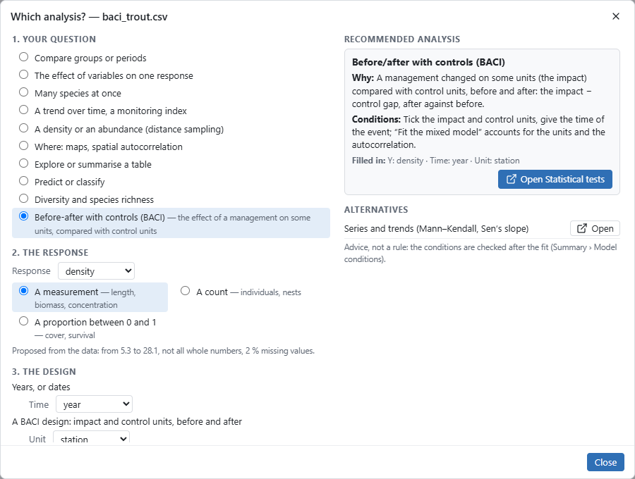

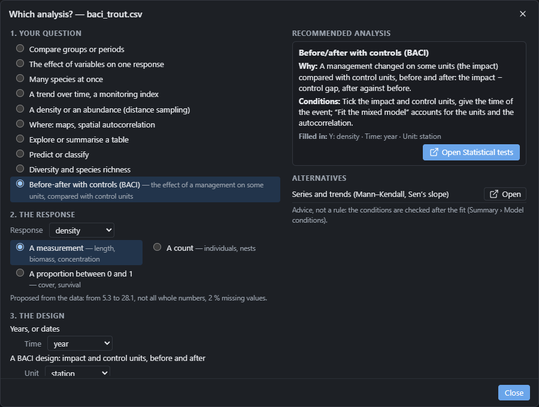
Click Open Statistical tests: the tests view opens in its Before/after (BACI) mode, the response, the time and the unit already chosen.
2. The gap between impact and controls
Tick A1, A2 and A3 on the Impact line, then all the others on the Controls line. Type the
year of the first "after" in Event: 2016.

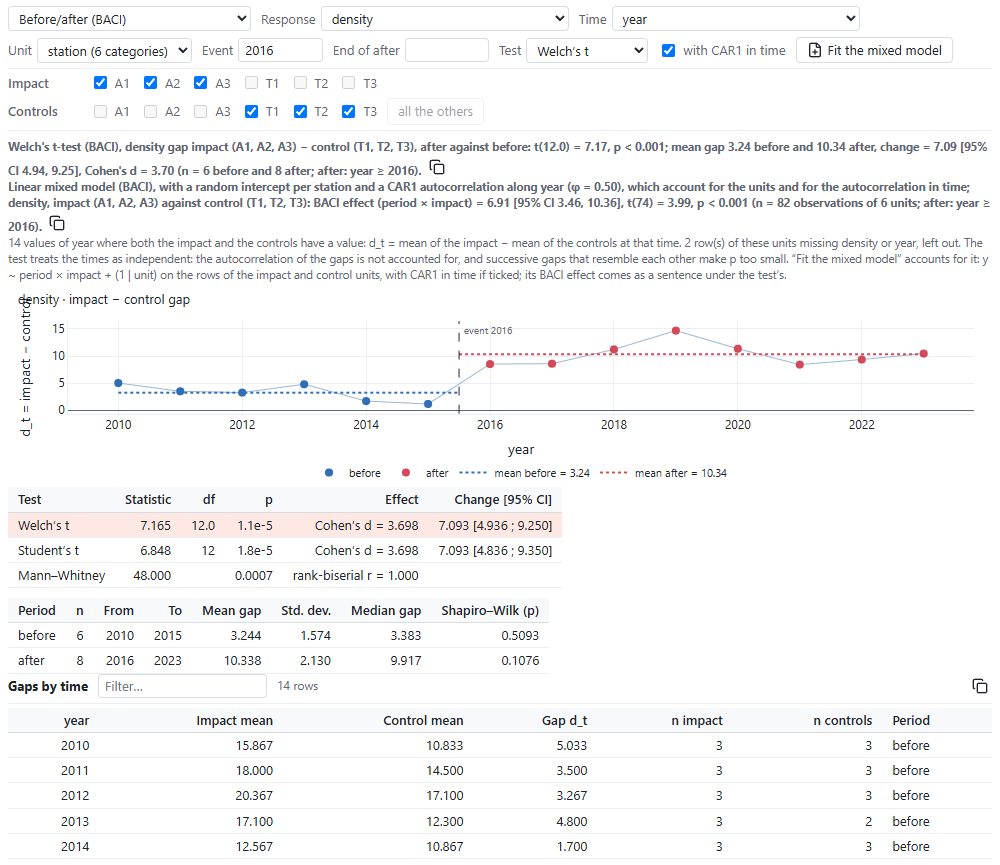

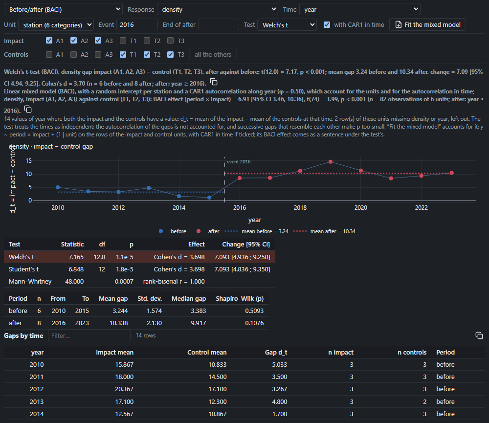
Each year, the gap d_t is the mean of the impact stations minus that of the controls. Before the removal, the mean gap is 3.24 juveniles per 100 m²; after, 10.34. Welch's test compares the gaps after with those before: the change is 7.09 [95% CI 4.94, 9.25], p < 0.001.
This test takes the years as independent. But successive gaps often resemble each other (a good year follows a good one): the note under the sentence says so, and then p is too small. The mixed model accounts for it.
3. The BACI mixed model
With CAR1 in time is ticked (each station has at least three years). Click Fit the mixed model. Nuée adds to the project two variables worth 0 or 1:
- "BACI period (2016)": 1 from 2016 on, 0 before;
- "BACI impact (A1, A2, A3 vs T1, T2, T3)": 1 for the impact stations, 0 for the controls;
then fits the linear mixed model density ~ period × impact + (1 | station), with a random
intercept per station and a CAR1 autocorrelation along the years within each station. The model
is named "BACI density"; its views open. Back in the BACI view, its effect comes as a sentence
under the test's (see the picture above): 6.91 [95% CI 3.46, 10.36], t(74) = 3.99, p < 0.001,
with φ = 0.50.

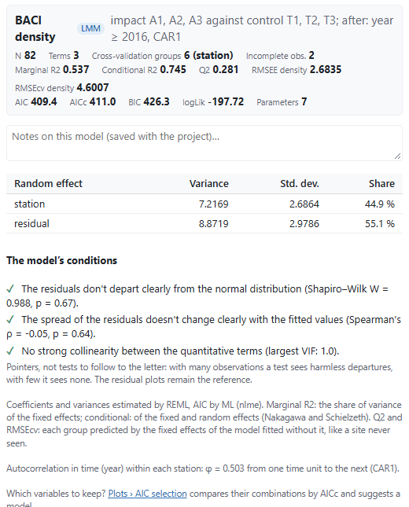

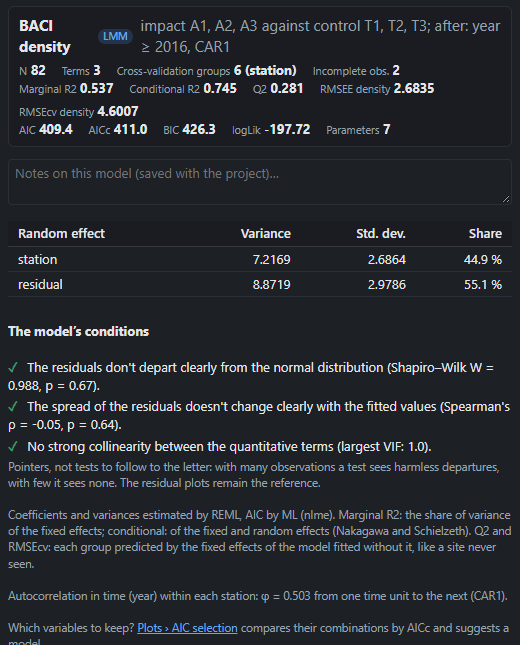
The Summary reads from top to bottom:
- 82 observations (2 without a density left out);
- marginal R² 0.54 (the share of variance of the fixed effects), conditional R² 0.74 (with the differences between stations);
- Q² 0.28: cross-validation predicts each station by a model fitted without it, by its fixed effects only, as a station never seen. A new station's own level is unknown: this modest Q² says nothing about the BACI effect;
- the station carries 45% of the variance, the rest is residual; φ = 0.50: the correlation from one year to the next within a station.
The model conditions are said in words, each ✓ or ⚠ with what to do. Here all three are fine: the residuals don't depart clearly from the normal distribution (Shapiro–Wilk p = 0.67), their spread doesn't change with the fitted values, and the terms aren't collinear. These are pointers: the residual plots (Plots › Residuals) remain the reference.
4. Reading the interaction
Plots › Coefficients:

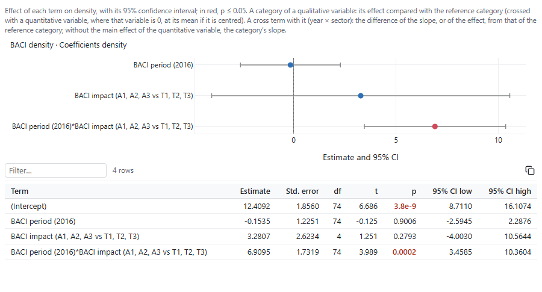

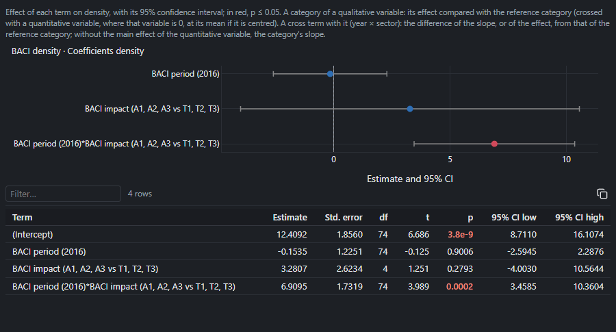
The two variables being worth 0 or 1, each coefficient has a precise meaning:
| Term | Estimate [95% CI] | What it measures |
|---|---|---|
| BACI period (2016) | −0.15 [−2.59, 2.29] | the change in the controls after 2016 |
| BACI impact | 3.28 [−4.00, 10.56] | the impact − control gap before 2016 |
| period × impact | 6.91 [3.46, 10.36] | the BACI effect: how much more the impact stations changed than the controls |
The restoration's effect is the cross term, not the period's or the impact's coefficient taken alone. The upstream stations already had 3.3 more juveniles than the controls before the works (a gap that isn't significant, estimated with 4 degrees of freedom: it compares stations); comparing impact and controls after the works only would have counted that gap as an effect. The cross term compares each station with itself (74 degrees of freedom). The data were simulated with an effect of +6: the model estimates it at 6.9.
5. Adjusted means
Adjusted means need qualitative variables. Make the period with Edit › New variable: name
period, formula ifelse(year >= 2016, "after", "before") (a text result gives a qualitative
variable).

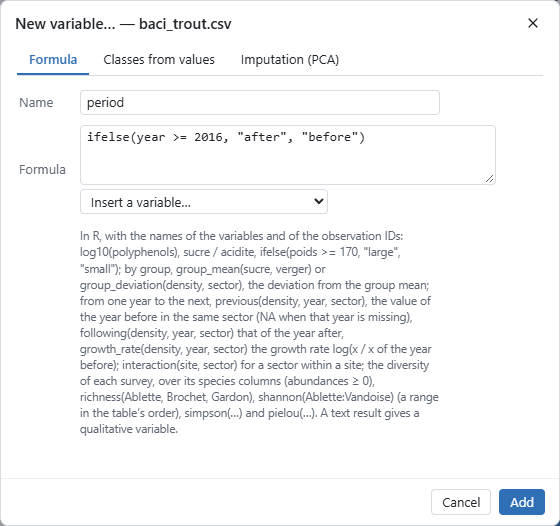

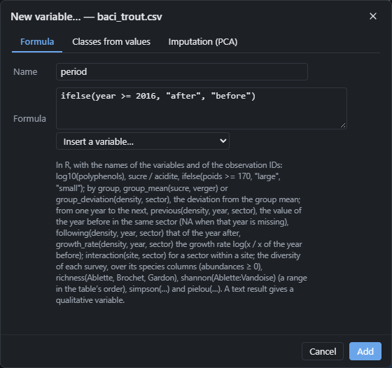
Then Model › New model: type Linear mixed model, and in R formula
density ~ period * group + (1 | station), then Apply: the response, the two variables, their
cross term and the station's random effect are set. Tick in time (CAR1) and choose year. Name
it "BACI factors" and fit it: it is the same model, written with categories.

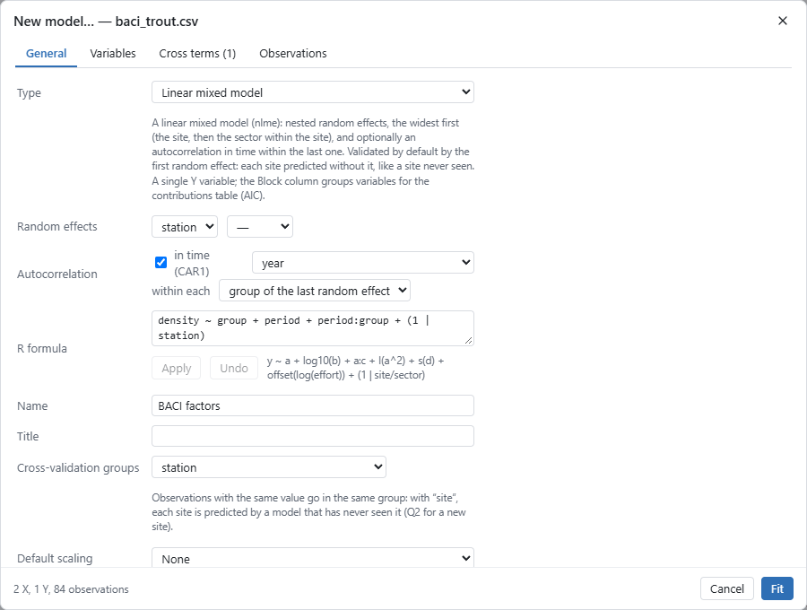

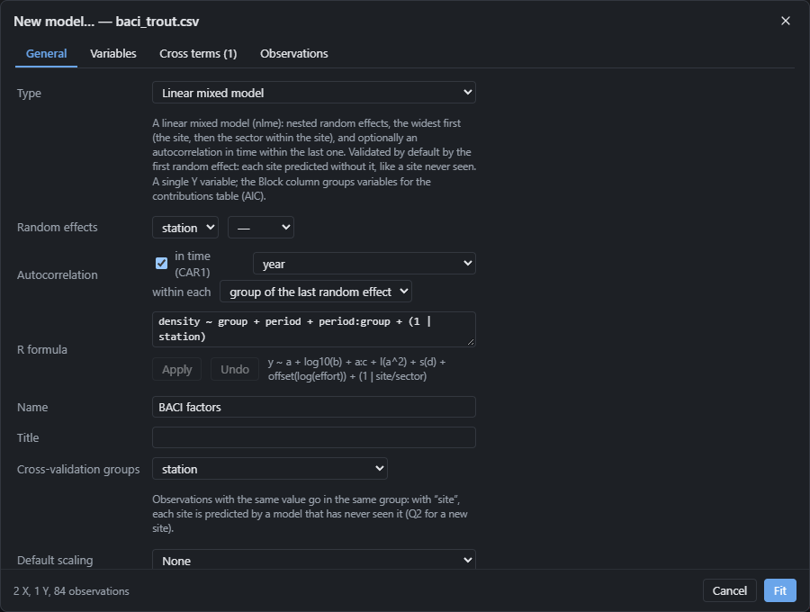
Plots › Adjusted means: categories of period, within each level of group.

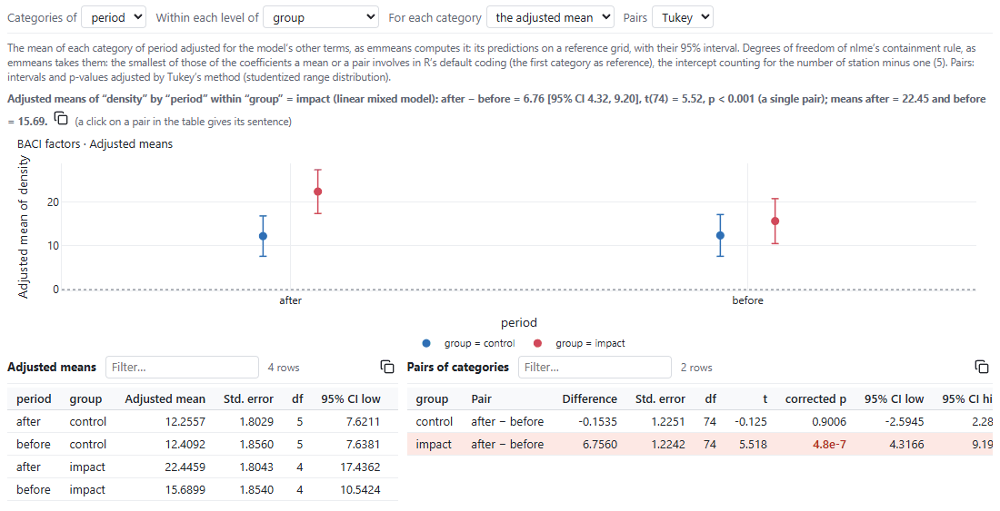

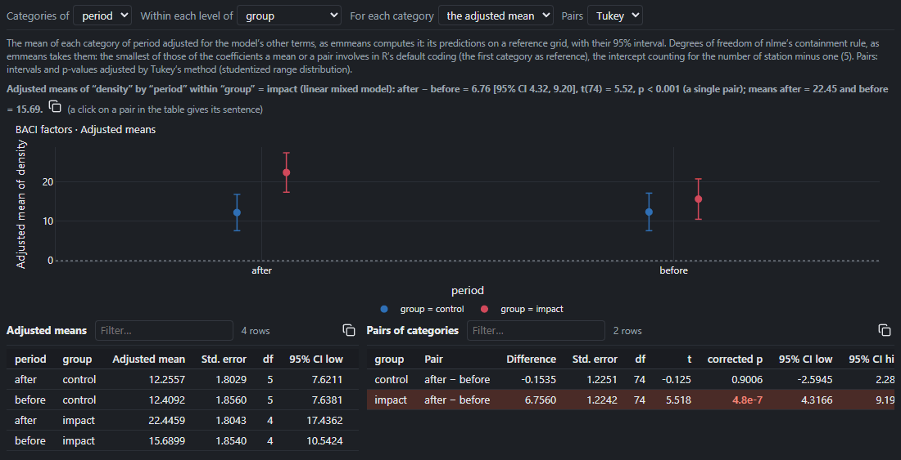
In the impact group, the density goes from 15.7 to 22.4 juveniles per 100 m²: +6.76 [95% CI 4.32, 9.20]. In the controls, from 12.4 to 12.3: −0.15 [−2.59, 2.29]. The difference between these two changes, 6.76 − (−0.15) = 6.91, is the BACI effect of the coefficient. A click on a pair of the table gives its sentence, to copy into a report.
6. The Methods and Results texts
Choose the "BACI density" model in the explorer, then Model › Text for the Methods section: a paragraph written from the model, in English or French, with its references, then the Results text.

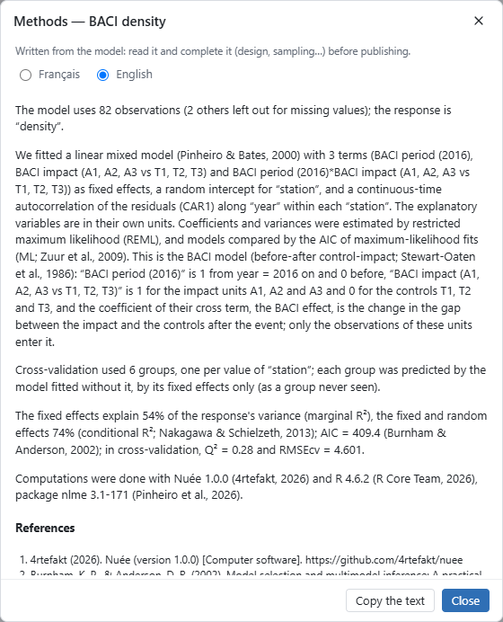

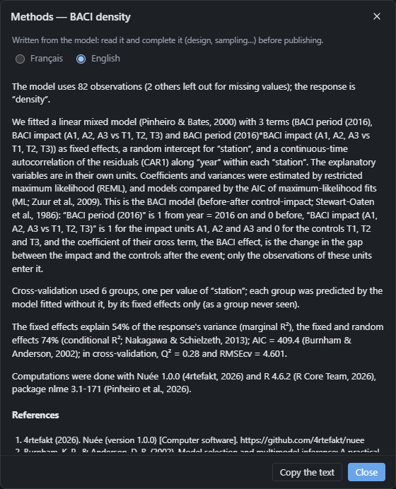
It says, among other things:
This is the BACI model (before-after control-impact; Stewart-Oaten et al., 1986): “BACI period (2016)” is 1 from year = 2016 on and 0 before, “BACI impact (A1, A2, A3 vs T1, T2, T3)” is 1 for the impact units A1, A2 and A3 and 0 for the controls T1, T2 and T3, and the coefficient of their cross term, the BACI effect, is the change in the gap between the impact and the controls after the event; only the observations of these units enter it.
and for the results:
Coefficients (on the link scale): “BACI period (2016)”: β = -0.153 (95% CI [-2.59, 2.29], p = 0.9); “BACI impact (A1, A2, A3 vs T1, T2, T3)”: β = 3.28 (95% CI [-4.00, 10.6], p = 0.28); “BACI period (2016)*BACI impact (A1, A2, A3 vs T1, T2, T3)”: β = 6.91 (95% CI [3.46, 10.4], p < 0.001).
Complete it with what the model doesn't know: the fishing protocol, the area fished, the dates. Copy the text puts it on the clipboard.
7. Export to R
File › Export to R writes a script that refits the model without Nuée, with R and its nlme
package (which comes with R): the data, the calculation written for this model (the fit by
nlme::lme() with nlme::corCAR1(form = ~ year | station), the cross-validation by station, the
statistics), then the tables and plots, all commented (about 250 lines here). As R Markdown or
Quarto, it becomes a report with the Methods text.

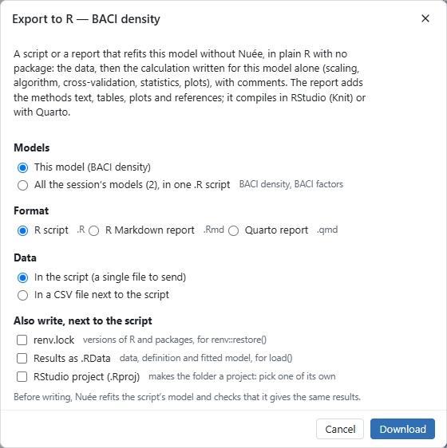

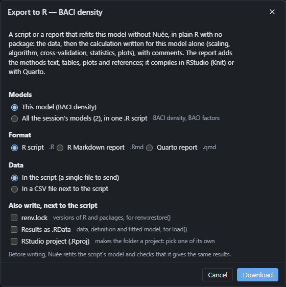
Before writing, Nuée refits the model with the script and checks that it gives the same results. In the desktop application the button reads Choose where…; the screenshot comes from the browser version, where it downloads the files.
Going further
- Plots › Residual autocorrelation shows the autocorrelation left from one year to the next; the models with and without CAR1 compare by AIC (Predict › Compare models).
- The guide: statistical tests and the BACI mode, mixed models, their conditions and adjusted means, Export to R.